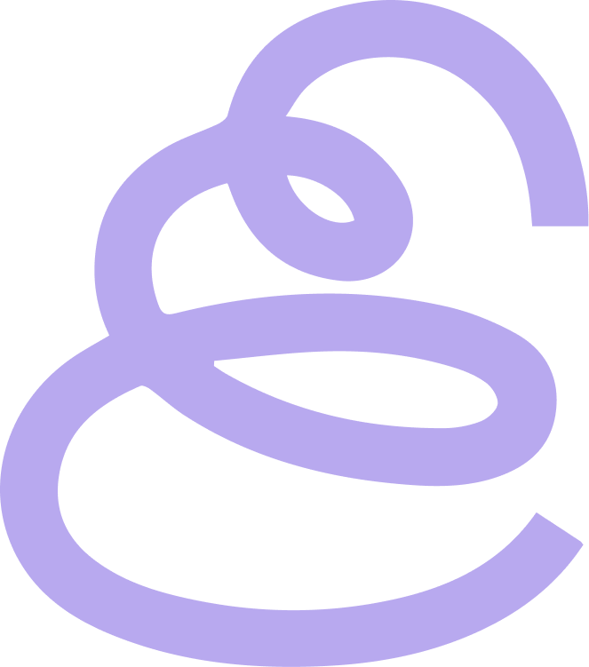
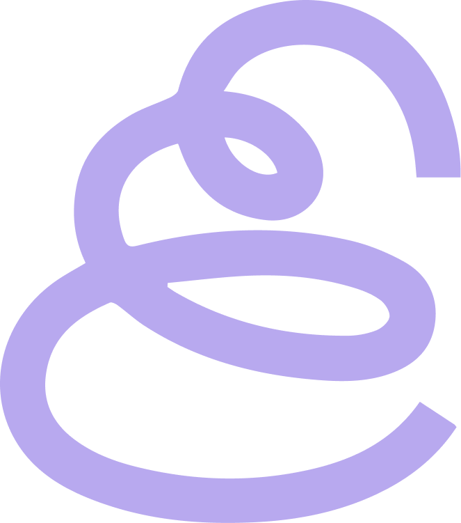

OKY APP
May 2022
1 Week sprint
5 Person team
My Role: Design Researcher
The Client
Oky App is a mobile application developed by UNICEF, designed primarily for girls and young women to provide reliable, accessible, and friendly information about menstrual health and well-being.
The App aims to break taboos and promote menstrual education in a safe, private, and personalized environment.
The Objective
✦ Conduct desk research to define the app’s user, their needs, and technical limitations.
✦ Design feature concepts to support young menstruators in their physical development.
✦ Prototype and test these concepts with users for feedback and refinement.
Who are the users?
• Menstruating individuals aged 10-19 who contributed to the platform's development.
• Children seeking to learn about puberty through the app’s educational content.
• Parents or guardians wanting to support their children during this developmental stage.
• Teachers looking to guide and assist students through this process.
Research and Planning
Inspection
We explore the app to identify key stakeholders, users, technical feasibility, and contexts of use.
Designer Point of View and How Might we?
We define user needs using the Designer Point of View methodology and generate insights through brainstorming and the "How Might We" approach.
Prototyping
Ideas from the brainstorming session are categorized by color, and product concepts and prototypes are developed.